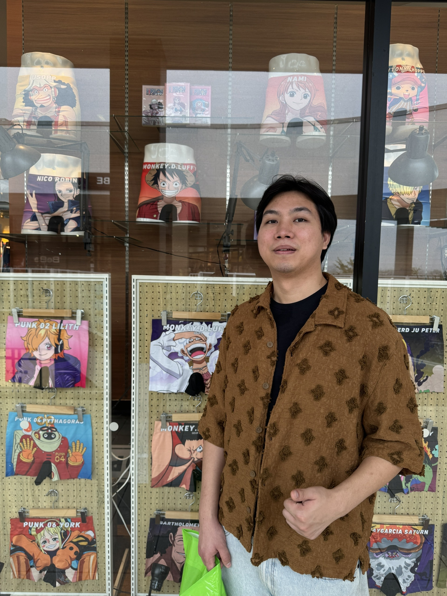

自己PR

責任感が強く、学んだことをすぐに行動に移せるタイプです。
現在、Javaを中心にWeb開発を学び、HTML・CSS・JavaScriptを使っておみくじアプリやログイン機能付きサイト、個人ブログなどを制作し、GitHubに公開しました。
落ち着いた性格ですが、チームの一員として責任を持ち、最後までやり遂げることができます。
入社後は、新しい技術を積極的に吸収し、成長し続けるエンジニアを目指します。
責任感が強く、学んだことをすぐに行動に移せるタイプです。
現在、Javaを中心にWeb開発を学び、HTML・CSS・JavaScriptを使っておみくじアプリやログイン機能付きサイト、個人ブログなどを制作し、GitHubに公開しました。
落ち着いた性格ですが、チームの一員として責任を持ち、最後までやり遂げることができます。
入社後は、新しい技術を積極的に吸収し、成長し続けるエンジニアを目指します。